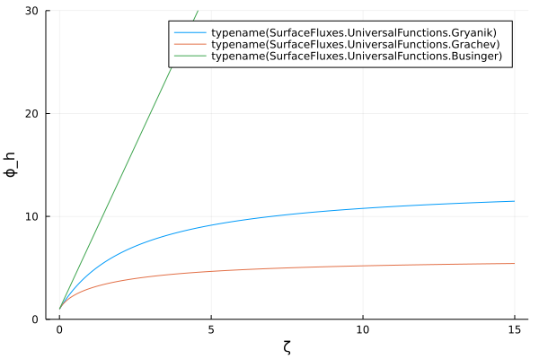
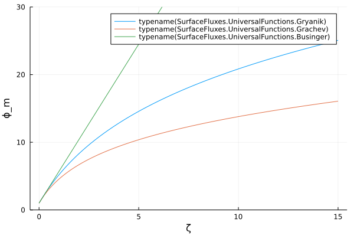
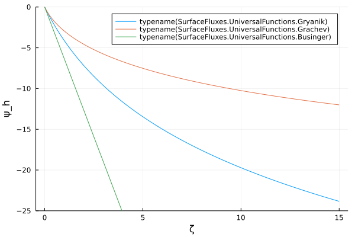
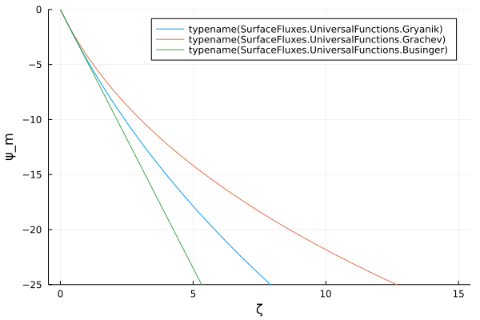
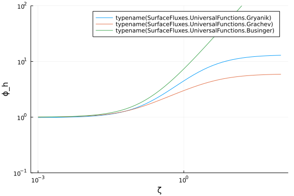
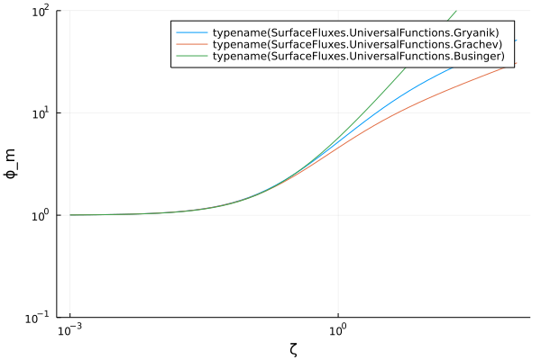
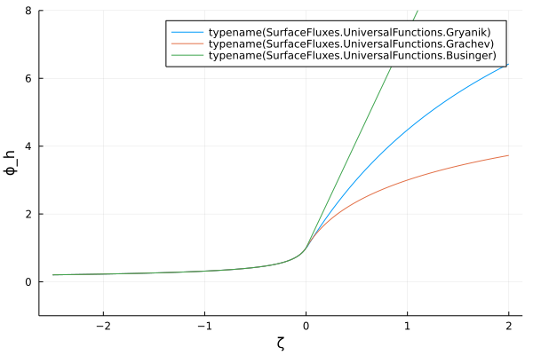
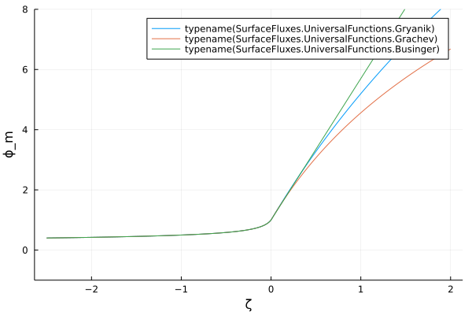

Universal Functions
UniversalFunctions.jl provides universal functions for SurfaceFluxes.jl. Here, we reproduce some plots from literature, specifically from Gryanik et al. 2020, and Businger.
import SurfaceFluxes
const SF = SurfaceFluxes
const UF = SF.UniversalFunctions
import CLIMAParameters
const CP = CLIMAParameters
struct EarthParameterSet <: CP.AbstractEarthParameterSet end;
const param_set = EarthParameterSet();
import Plots
FT = Float32;
ζ = FT(-0.1):FT(0.001):FT(0.1);
L = FT(10);
args = (L, param_set)
universal_functions(args) = (UF.Gryanik(args...),
UF.Grachev(args...),
UF.Businger(args...),)
function save_ϕ_figs(args, ζ; ylims=nothing, fig_prefix="", xaxis=:identity, yaxis=:identity)
Plots.plot()
for uf in universal_functions(args)
ϕ_m = UF.phi.(uf, ζ, UF.MomentumTransport());
name = "$(typeof(uf).name)"
Plots.plot!(ζ, ϕ_m, xlabel="ζ", ylabel="ϕ_m", label=name, ylims=ylims, xaxis=xaxis,yaxis=yaxis)
end
Plots.savefig("$(fig_prefix)_phi_m.svg");
Plots.plot()
for uf in universal_functions(args)
ϕ_h = UF.phi.(uf, ζ, UF.HeatTransport());
name = "$(typeof(uf).name)"
Plots.plot!(ζ, ϕ_h, xlabel="ζ", ylabel="ϕ_h", label=name, ylims=ylims, xaxis=xaxis,yaxis=yaxis)
end
Plots.savefig("$(fig_prefix)_phi_h.svg")
end
function save_ψ_figs(args, ζ; ylims=nothing, fig_prefix="", xaxis=:identity, yaxis=:identity)
Plots.plot()
for uf in universal_functions(args)
ψ_m = UF.psi.(uf, ζ, UF.MomentumTransport());
name = "$(typeof(uf).name)"
Plots.plot!(ζ, ψ_m, xlabel="ζ", ylabel="ψ_m", label=name, ylims=ylims, xaxis=xaxis,yaxis=yaxis)
end
Plots.savefig("$(fig_prefix)_psi_m.svg");
Plots.plot()
for uf in universal_functions(args)
ψ_h = UF.psi.(uf, ζ, UF.HeatTransport());
name = "$(typeof(uf).name)"
Plots.plot!(ζ, ψ_h, xlabel="ζ", ylabel="ψ_h", label=name, ylims=ylims, xaxis=xaxis,yaxis=yaxis)
end
Plots.savefig("$(fig_prefix)_psi_h.svg");
endsave_ψ_figs (generic function with 1 method)Figs 1,2 (Gryanik)
save_ϕ_figs(args, FT(0):FT(0.01):FT(15);ylims=(0,30), fig_prefix="Gryanik12")
save_ψ_figs(args, FT(0):FT(0.01):FT(15);ylims=(-25,0), fig_prefix="Gryanik12")   
Fig 3 (Gryanik)
save_ϕ_figs(args, 10 .^ (FT(-3):0.1:FT(2)); ylims=(0.1,10^2), xaxis=:log10, yaxis=:log10, fig_prefix="Gryanik3") 
Figs 1,2 (Businger)
save_ϕ_figs(args, FT(-2.5):FT(0.01):FT(2);ylims=(-1,8),fig_prefix="Businger") 